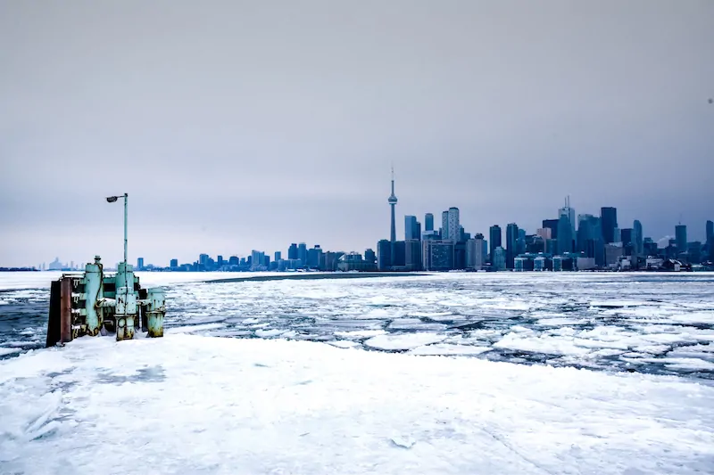

Good Experiences
The Summers! As a consolation prize for the extended months of ice, Toronto gets a hot and humid summer: Which invariably means spending summers out of town alongside lakes (better start saving for that summer cottage now), trips to the Toronto Islands on the Ferry and plenty of things to do in Toronto in Summer from browsing Farmers Markets and Food Festivals to enjoying the green spaces outside of the city. The official start of Canadian summer is June 21, when the powder is still disappearing from the country's famed high-altitude peaks. Temperatures during this time of year linger in the low 60s F in coastal areas like St. John's, Newfoundland, or get up into the mid-70s F in Ottawa and Toronto. July is generally warmer and also the most touristy time. Afternoon highs in the peak of summer tend to be in the 70s, while nighttime lows can drop to 50 F or lower.
Bad Experiences
The Construction: As Toronto has soared in popularity as a place to live, it has quickly run out of places for its new- and old- comers to live, especially affordable ones. Clearly, more accommodation needs to be built. The skyline of Toronto, like many other “world cities” has become peppered with cranes. Come summer (the season which the ground is not frozen in) and many a luxury downtown condo is surrounded by construction of the same.

Canadian Winters: are no joke. If you love the cold weather and winter sports then you can skip this, you’ll be just fine. For those who like their weather warm (like us) and are concerned about Canadian winters, you have every right to be! But the Toronto winter can have a real impact on your life. It gets windy in downtown Toronto, bringing arctic gusts around the tall buildings, creating a piercing chill as you wait for the streetcar. The winter we just survived (2018-9) was apparently one of the worst (we’re not convinced) and lasted from November to May.
Types of Houses
Condo
from condo living in the city’s central core through to townhouses
or bungalows on the outskirts of town,
the Toronto housing market has plenty to choose
from when it comes to the extremely diverse styles of homes that it offers.
Townhousing
Townhouses or rowhouses also abound in the Toronto area, where
three or more separate units are joined together in a row
of housing unit.Each unit usually
has three separate levels: a main living area, full basement, and upper level with bedrooms.
However, there are many variations and different floor plans that exist on the Toronto real estate market.
Semi-detached
Another going style of home in the Toronto area is the semi-detached
home. These are defined as homes that have one side of the
house attached to a neighboring house,
while the other side is completely detached.
Bungalow

A bungalow’s most defining feature is its overhanging, low-sloped roof. They
also usually have an open porch area off the
main doorway, some with a set of supporting columns and a small veranda.